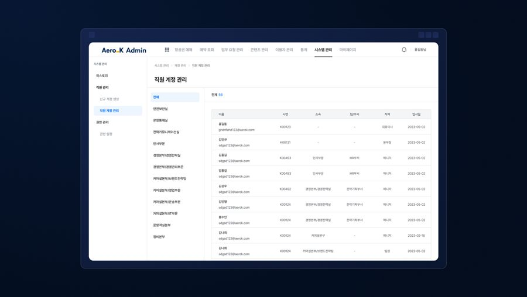
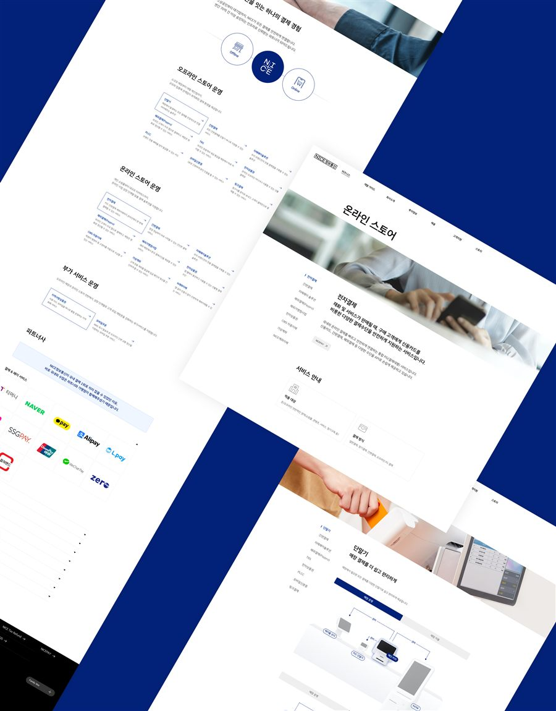
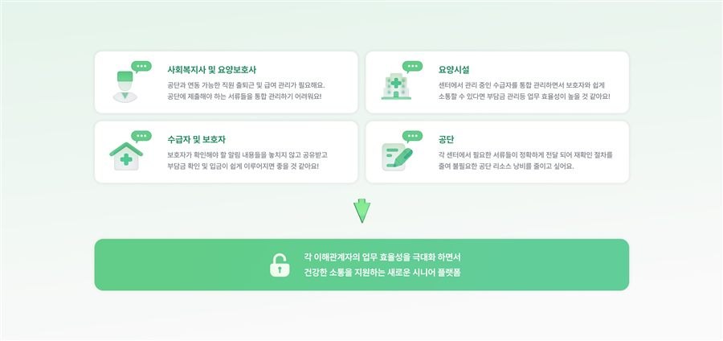
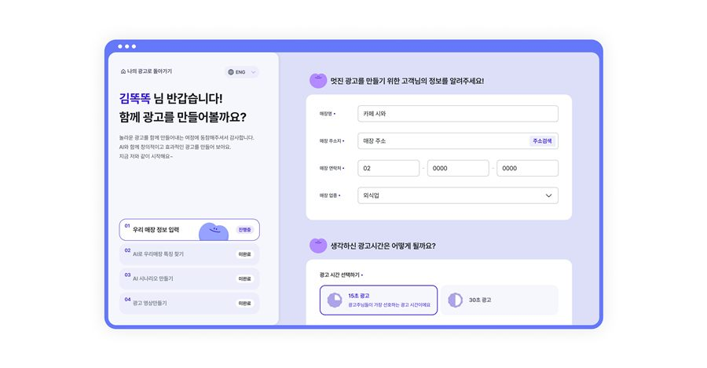
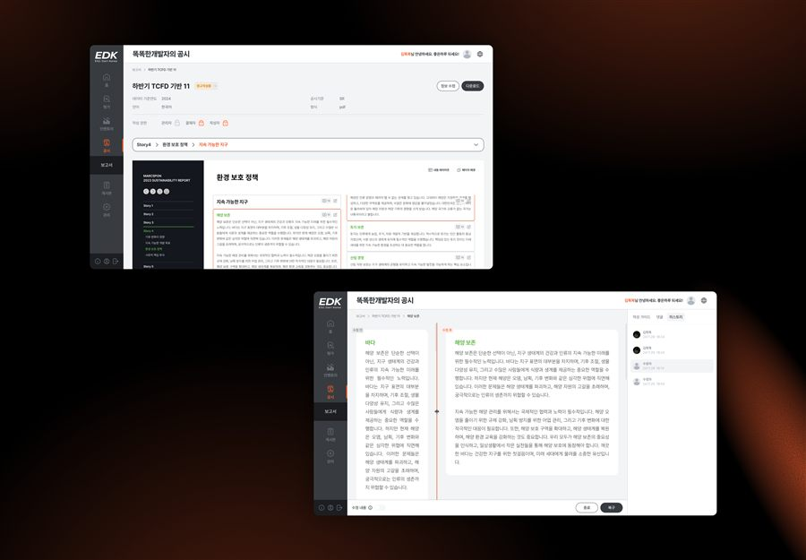
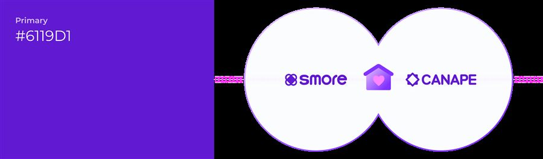

빠른 결과물은 많아졌습니다.
같은 도구를 써도 결과는 다릅니다. 요구를 잘라내는 판단, 구조를 설계하는 방식, 검수 기준에서 차이가 생깁니다.
기획 · 디자인 · 개발 · 검수를 한 팀이 끝까지 맡습니다.
누가 만들었고 왜 그렇게 정했는지, 그 근거를 함께 남깁니다.
포트폴리오의 개수보다, 실제 작업자와 과정이 확인되는지가 발주 판단의 근거가 되어야 합니다.
같은 도구를 써도 결과는 다릅니다. 요구를 잘라내는 판단, 구조를 설계하는 방식, 검수 기준에서 차이가 생깁니다.
화려한 목업과 기술 스택만으로는 실제 수행 경험과 책임 범위를 판단하기 어렵습니다.
참여한 Work, 작성한 Insight, 작업 과정의 기록을 연결해 고객이 직접 판단할 수 있게 합니다.
고객이 직접 확인할 수 있는 네 가지 근거를 먼저 설계했습니다.
지금 필요한 범위와 다음 단계로 넘길 범위를 분리해 일정과 비용의 불확실성을 줄입니다.
프로젝트 참여 이력과 작성 콘텐츠를 빌더 프로필에 연결하는 구조를 제안합니다.
결정 이유와 작업 범위를 남겨 인수인계와 이후 확장이 가능하도록 합니다.
빌더가 등록한 Work와 Insight를 운영자가 확인하는 콘텐츠 승인 구조를 전제로 합니다.

항공 운영 데이터를 빠르게 파악하고 대응할 수 있도록 정보 구조를 단순화한 관리자 시스템입니다.

기업 소개부터 온·오프라인 결제 솔루션까지, 방대한 영역을 사용자 친화적 구조로 재편한 웹사이트입니다.

장기요양기관의 운영·관리와 보호자 소통을 함께 담은 시니어 플랫폼 ERP 입니다.

영상 제작에 익숙하지 않은 소상공인이 AI의 도움으로 광고 영상을 만드는 서비스입니다.

ESG 도메인의 전문성과 신뢰감이 디자인 톤까지 일관되게 이어지도록 설계한 플랫폼입니다.

코딩 없이 경품 이벤트를 만들고 고객 데이터를 활용하는 서비스입니다.
각 단계에서 무엇을 확인하고, 무엇을 전달받는지 미리 정해두고 시작합니다.
목표, 사용자, 현재 방식과 가장 큰 병목을 확인합니다.
이번 릴리즈에 필요한 것과 다음 단계로 넘길 것을 구분합니다.
확정된 구조를 기준으로 화면과 기능을 작은 단위로 구현합니다.
작동 여부뿐 아니라 운영 가능성과 기록을 함께 확인해 전달합니다.
실제 작업자의 Work와 Insight를 연결해, 고객이 직접 확인할 수 있는 근거를 남깁니다.
문제 정의와 사용자 흐름을 화면 구조로 바꾸는 빌더.
프론트엔드와 운영 어드민을 함께 구현하는 빌더.
AI 자동화와 데이터 흐름을 서비스에 연결하는 빌더.
1기가 진행 중이라 빌더 프로필은 준비 중입니다. 위 카드는 작업물과 콘텐츠를 어떻게 연결해 보여드릴지에 대한 예시입니다.
AI 빌더 스쿨이 운영하는 부트캠프를 거친 빌더가 이곳에서 작업합니다. 무엇을 배우고 무엇을 만들어 봤는지가 곧 작업의 근거입니다.
과정 자세히 보기총액을 먼저 던지지 않습니다. 진단에서 이번에 만들 범위와 다음 단계로 넘길 범위를 나눈 뒤, 기획·디자인·개발·검수 단계별로 쪼갠 산정을 드립니다. AI 기능이 들어가면 구축 비용만이 아니라 이후 모델 사용료와 운영 비용까지 함께 계산합니다. 예산이 정해져 있으면 그 안에서 만들 범위를 먼저 잡는 방식도 제안합니다.
기간을 좌우하는 것은 개발 속도보다 요구사항이 얼마나 정리돼 있는지입니다. 착수 전에 화면 구조와 데이터 구조를 확정하고, 작은 단위로 나눠 만들면서 주간 결과물을 공유합니다. 막판에 일정이 밀리는 상황은 대부분 범위가 중간에 늘어났는데 기록이 남지 않아 생깁니다.
발주사입니다. 저장소와 배포·서버 계정을 발주사 명의로 세팅하고, 인수인계 문서를 함께 전달합니다. 이후에 내부 개발팀을 꾸리거나 다른 곳으로 옮기더라도 그대로 이어받을 수 있는 상태를 기본으로 봅니다.
기존 시스템을 갈아엎지 않는 방향을 먼저 검토합니다. 쓰던 화면과 동선 위에 얹는 설계가 가능하면 그쪽을 택합니다. 새 시스템을 하나 더 열어야 하는 구조는 도입 직후에는 돌아가도 몇 달 뒤에 아무도 쓰지 않게 되는 경우가 많습니다.
가능합니다. 진단 단계에서 목표와 사용자, 지금 가장 큰 병목을 먼저 확인하고 요구사항 요약·우선순위·제외 범위를 함께 정리해 드립니다. 이 단계에 시간을 아끼면 이후에 범위 다툼으로 더 큰 시간을 씁니다.
주간 결과물과 결정 기록, 변경사항을 함께 전달합니다. 무엇을 만들었는지뿐 아니라 왜 그렇게 정했는지가 남아야 나중에 인수인계와 확장이 됩니다.
바뀐 내용과 판단 근거를 기록하고, 이번 릴리즈에 넣을지 다음 단계로 넘길지를 그 자리에서 나눕니다. 범위 변경 자체가 문제가 되는 경우는 드물고, 기록 없이 넘어가는 것이 문제가 됩니다.
검수를 사람의 집중력이 아니라 규칙에 맡깁니다. 통과 기준을 문장이 아니라 확인 항목으로 적고, 같은 입력에 같은 결과가 나오도록 둡니다. 생성한 쪽이 자기 결과를 평가하면 통과 쪽으로 기울기 때문에 검수는 생성과 분리합니다.
Work 의 참여 프로젝트와 Insight 의 작성 콘텐츠를 빌더 프로필에 연결하는 방향으로 설계돼 있습니다. 실제 공개 범위는 운영 정책 확정 후 반영합니다.
프로젝트에 필요한 역할을 먼저 정하고 그 역할을 맡을 사람을 배정합니다. 기획·UI/UX, 웹·어드민, 자동화·API 처럼 작업 범위가 다르기 때문입니다. 배정 기준과 공개 범위는 운영 정책 확정 후 안내드립니다.
AI 빌더 스쿨 부트캠프는 비개발자와 입문자를 대상으로 합니다. 3개월 동안 기초 4주와 실전 2개월로 나뉘고, 주말 대면 실습과 평일 비대면 이론으로 진행합니다. 과정을 마치면 직접 배포한 프로덕트가 하나 남습니다.
과정에서 만든 결과물과 그때의 판단 기록이 그대로 근거가 됩니다. 무엇을 만들어 봤고 어떤 기준으로 정했는지가 남기 때문입니다. 참여 방식과 범위는 운영 정책에 따릅니다.
프로젝트의 현재 단계와 필요한 기능을 알려주세요. 상담 과정에서 이번에 만들 범위와 다음 단계로 넘길 범위를 함께 정리합니다.
프로젝트 이야기를
지금 시작해 보세요.
현재 단계와 필요한 기능만 알려주시면, 이번에 만들 범위와 다음 단계로 넘길 범위를 함께 정리해 드립니다.
프로젝트 문의하기